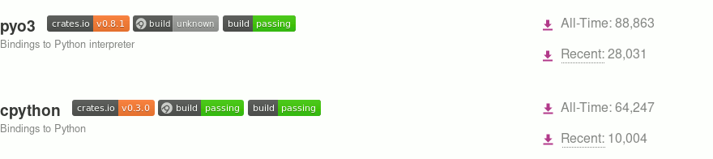

Python のイテレーターと Rust の借用
2019-10-26
Yuya Nishihara
twitter: @yujauja
Mercurial committer
Two major crates:

PyO3 "minimum required Rust version is 1.37.0-nightly"
which (basically) generates:
struct IntSet { ...: *mut ffi::PyObject }
impl IntSet {
fn hash_set<'a>(&'a self, py: Python<'a>)
-> &'a RefCell<HashSet<i32>> { ... }
}Send + 'static,py: Python<'a> (!Sync nor !Send) marker guarantees GIL acquired,IntSet can be Send and Sync.Python iterator
over Rust collection:
py_class!(class IntSetIter |py| {
data iter: RefCell<Iter<'_, i32>>; // doesn't compile
def __next__(&self) -> PyResult<Option<PyInt>> {
self.iter(py).borrow().next()
}
})but...
<'a> cannot live in the Python world.
but <'static> can!!
unsafe { &*ptr }Cheated lifetime so the iterator can (out)live in the Python world.
Things to consider:
Incref the owner PyObject and keep it.
Easy. Just require GIL for any operation.
Invalidate references when underlying object mutated.
struct IntSet { hash_set: PySharedRefCell<HashSet<i32>> }
struct IntSetIter { leaked_iter: PyLeaked<Iter<'static, i32>> }
leaked_iter = hash_set.do_some_weird_thing();
// remember generation
impl IntSet { fn add(...) {
self.hash_set(py).borrow_mut(); } } // generation += 1
impl IntSetIter { fn __next__(...) {
self.leaked_iter(py).try_borrow_mut(py); } }
// compare generation valuesRefCell.fn map<U>(self, py: Python,
f: impl FnOnce(&'static T) -> U) -> PyLeaked<U>
fn try_borrow_mut(&mut self, py: Python)
-> PyResult<PyLeakedRefMut<T>>py_class!(class IntSet |py| {
data hash_set: PySharedRefCell<HashSet<i32>>;
});
let hash_set = self.shared_hash_set(py);
let leaked = hash_set.leak_immutable();
let leaked_iter = leaked.map(py, |s| s.iter());
def __next__(&self) -> PyResult<Option<PyInt>> {
let mut iter = self.leaked_iter(py).try_borrow_mut(py)?;
iter.next()
}unsafe fn map<U>(self, py: Python,
f: impl FnOnce(&'static T) -> U) -> PyLeaked<U>
unsafe fn try_borrow_mut(&mut self, py: Python)
-> PyResult<PyLeakedRefMut<T>>because the lifetime is cheated.
Many ways to obtain the underlying &'static:
&'static is not a silver bullet.Sharing references between Python and Rust, by Raphaël Gomès
https://raphaelgomes.dev/blog/articles/2019-07-01-sharing-references-between-python-and-rust.html
PyO3 and rust-cpython